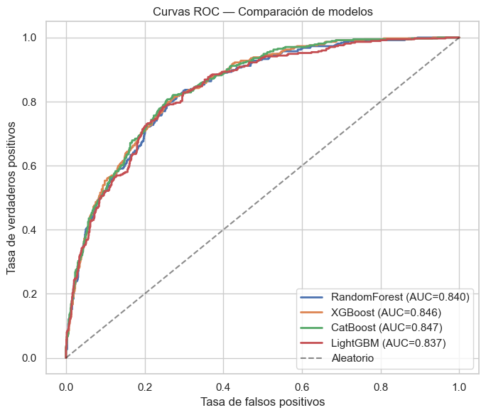
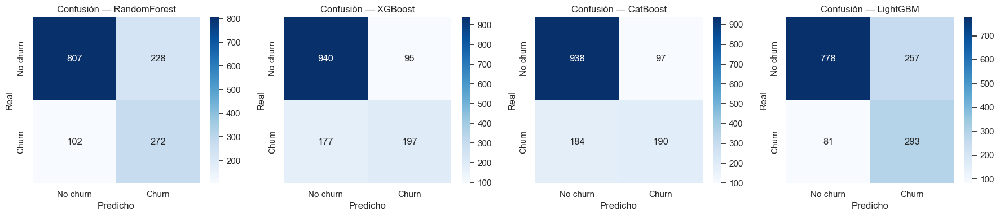
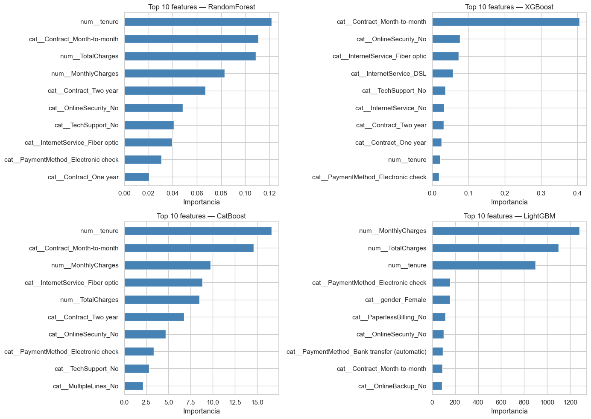

2. Entrenamiento y evaluación de modelos#
Entrenamos cuatro clasificadores distintos sobre el mismo split, con Pipeline (preprocesamiento + modelo) y búsqueda de hiperparámetros vía GridSearchCV con validación cruzada estratificada de 5 folds.
Modelos:
Random Forest
XGBoost con soporte GPU
CatBoost
LightGBM
Comparamos por ROC-AUC y reportamos también accuracy, precision, recall, F1, matriz de confusión y curva ROC. Al final guardamos el mejor pipeline en app/model.joblib para que la API lo cargue.
import warnings, time, json
warnings.filterwarnings("ignore")
import numpy as np
import pandas as pd
import matplotlib.pyplot as plt
import seaborn as sns
import joblib
from pathlib import Path
from sklearn.ensemble import RandomForestClassifier
from sklearn.model_selection import GridSearchCV, StratifiedKFold, train_test_split
from sklearn.pipeline import Pipeline
from sklearn.metrics import (
accuracy_score, precision_score, recall_score, f1_score,
roc_auc_score, confusion_matrix, roc_curve, classification_report,
)
# Importamos el preprocesador desde el módulo del proyecto. Esto garantiza
# que entrenamiento y serving usen exactamente la misma lógica.
import sys
sys.path.append("..")
from app.preprocessing import (
ALL_FEATURES, TARGET_COLUMN,
build_preprocessor, build_feature_frame, clean_total_charges,
)
sns.set_theme(style="whitegrid")
RANDOM_STATE = 42
USE_GPU = True # cambia a False si no tienes GPU NVIDIA
2.1 Carga y split#
df = pd.read_csv("telco_churn.csv").drop(columns=["customerID"])
df = clean_total_charges(df)
y = (df[TARGET_COLUMN] == "Yes").astype(int)
X = build_feature_frame(df.drop(columns=[TARGET_COLUMN]))
X_train, X_test, y_train, y_test = train_test_split(
X, y, test_size=0.20, stratify=y, random_state=RANDOM_STATE,
)
print(f"Train: {X_train.shape} | Test: {X_test.shape}")
print(f"Churn rate train: {y_train.mean():.3f} | test: {y_test.mean():.3f}")
Train: (5634, 19) | Test: (1409, 19)
Churn rate train: 0.265 | test: 0.265
El stratify=y mantiene proporciones equivalentes en ambos lados — necesario porque el desbalance es relevante. La validación cruzada también será estratificada.
cv = StratifiedKFold(n_splits=5, shuffle=True, random_state=RANDOM_STATE)
2.2 Función de evaluación común#
def evaluate(model, X_te, y_te, name):
"""Calcula métricas y devuelve dict + imprime resumen."""
y_pred = model.predict(X_te)
y_proba = model.predict_proba(X_te)[:, 1]
metrics = {
"model": name,
"accuracy": accuracy_score(y_te, y_pred),
"precision": precision_score(y_te, y_pred),
"recall": recall_score(y_te, y_pred),
"f1": f1_score(y_te, y_pred),
"roc_auc": roc_auc_score(y_te, y_proba),
}
print(f"\n=== {name} ===")
for k, v in metrics.items():
if k != "model":
print(f" {k:>10}: {v:.4f}")
return metrics, y_proba
2.3 Random Forest#
rf_pipe = Pipeline([
("preprocessor", build_preprocessor()),
("model", RandomForestClassifier(
random_state=RANDOM_STATE, n_jobs=-1, class_weight="balanced",
)),
])
rf_grid = {
"model__n_estimators": [200, 400],
"model__max_depth": [None, 10],
"model__min_samples_split": [2, 5],
"model__min_samples_leaf": [1, 2],
"model__max_features": ["sqrt"],
"model__bootstrap": [True],
"model__criterion": ["gini", "entropy"],
}
t0 = time.time()
rf_search = GridSearchCV(rf_pipe, rf_grid, scoring="roc_auc", cv=cv,
n_jobs=-1, verbose=1, refit=True)
rf_search.fit(X_train, y_train)
print(f"Tiempo: {time.time()-t0:.1f}s")
print("Mejores params:", rf_search.best_params_)
rf_metrics, rf_proba = evaluate(rf_search.best_estimator_, X_test, y_test, "RandomForest")
Fitting 5 folds for each of 32 candidates, totalling 160 fits
Tiempo: 38.1s
Mejores params: {'model__bootstrap': True, 'model__criterion': 'entropy', 'model__max_depth': 10, 'model__max_features': 'sqrt', 'model__min_samples_leaf': 2, 'model__min_samples_split': 5, 'model__n_estimators': 400}
=== RandomForest ===
accuracy: 0.7658
precision: 0.5440
recall: 0.7273
f1: 0.6224
roc_auc: 0.8400
Análisis Random Forest:
Buen baseline robusto, no requiere mucho tuning.
class_weight='balanced'reajusta automáticamente para compensar la clase minoritaria — sube el recall a costa de la precision.Es el modelo más interpretable del trío de árboles ensamblados .
2.4 XGBoost (con GPU )#
from xgboost import XGBClassifier
xgb_kwargs = dict(
random_state=RANDOM_STATE, n_jobs=-1,
eval_metric="logloss", tree_method="hist",
)
if USE_GPU:
# API moderna xgboost ≥ 2.0
xgb_kwargs["device"] = "cuda"
xgb_pipe = Pipeline([
("preprocessor", build_preprocessor()),
("model", XGBClassifier(**xgb_kwargs)),
])
xgb_grid = {
"model__n_estimators": [200, 400],
"model__max_depth": [4, 6],
"model__learning_rate": [0.05, 0.1],
"model__subsample": [0.8, 1.0],
"model__colsample_bytree": [0.8, 1.0],
"model__gamma": [0, 1],
"model__min_child_weight": [1, 3],
"model__reg_alpha": [0, 0.1],
"model__reg_lambda": [1.0],
"model__scale_pos_weight": [1.0, 2.7],
}
t0 = time.time()
xgb_search = GridSearchCV(xgb_pipe, xgb_grid, scoring="roc_auc", cv=cv,
n_jobs=-1, verbose=1, refit=True)
xgb_search.fit(X_train, y_train)
print(f"Tiempo: {time.time()-t0:.1f}s")
print("Mejores params:", xgb_search.best_params_)
xgb_metrics, xgb_proba = evaluate(xgb_search.best_estimator_, X_test, y_test, "XGBoost")
Fitting 5 folds for each of 512 candidates, totalling 2560 fits
Tiempo: 1405.8s
Mejores params: {'model__colsample_bytree': 0.8, 'model__gamma': 1, 'model__learning_rate': 0.05, 'model__max_depth': 4, 'model__min_child_weight': 1, 'model__n_estimators': 200, 'model__reg_alpha': 0.1, 'model__reg_lambda': 1.0, 'model__scale_pos_weight': 1.0, 'model__subsample': 1.0}
=== XGBoost ===
accuracy: 0.8070
precision: 0.6747
recall: 0.5267
f1: 0.5916
roc_auc: 0.8463
Análisis XGBoost:
En GPU el grid completo termina varias veces más rápido. Para verificar uso de GPU: durante la ejecución abre el Administrador de Tareas (Windows) o
nvidia-smi -l 1(Linux) y mira el porcentaje del dispositivo.scale_pos_weight=2.7es la relación negativos/positivos en el train set; le dice al modelo que penalice más fallar en la clase minoritaria.Importante: si ves un warning como «WARNING: … If you are using cudf and dask, …» o similar, no afecta la corrección. Si en cambio ves «GPU device not found», el grid se ejecuta en CPU silenciosamente — verifica que
xgboostesté compilado con CUDA (pip install xgboostya viene con GPU support en la mayoría de plataformas).
2.5 CatBoost#
from catboost import CatBoostClassifier
cb_pipe = Pipeline([
("preprocessor", build_preprocessor()),
("model", CatBoostClassifier(random_seed=RANDOM_STATE, verbose=False)),
])
cb_grid = {
"model__iterations": [200, 400],
"model__depth": [4, 6],
"model__learning_rate": [0.05, 0.1],
"model__l2_leaf_reg": [3, 5],
"model__bagging_temperature": [0, 1],
"model__border_count": [128],
"model__random_strength": [1],
}
t0 = time.time()
cb_search = GridSearchCV(cb_pipe, cb_grid, scoring="roc_auc", cv=cv,
n_jobs=-1, verbose=1, refit=True)
cb_search.fit(X_train, y_train)
print(f"Tiempo: {time.time()-t0:.1f}s")
print("Mejores params:", cb_search.best_params_)
cb_metrics, cb_proba = evaluate(cb_search.best_estimator_, X_test, y_test, "CatBoost")
Fitting 5 folds for each of 32 candidates, totalling 160 fits
Tiempo: 49.5s
Mejores params: {'model__bagging_temperature': 0, 'model__border_count': 128, 'model__depth': 4, 'model__iterations': 200, 'model__l2_leaf_reg': 3, 'model__learning_rate': 0.05, 'model__random_strength': 1}
=== CatBoost ===
accuracy: 0.8006
precision: 0.6620
recall: 0.5080
f1: 0.5749
roc_auc: 0.8472
Aunque CatBoost tiene categóricas nativas (sin one-hot), aquí lo tenemos ya transformado para mantener todos los modelos sobre el mismo input. Aún así suele competir muy bien y maneja sobreajuste con l2_leaf_reg y bagging_temperature.
2.6 LightGBM#
from lightgbm import LGBMClassifier
lgbm_pipe = Pipeline([
("preprocessor", build_preprocessor()),
("model", LGBMClassifier(
random_state=RANDOM_STATE, n_jobs=-1, verbose=-1,
class_weight="balanced",
)),
])
lgbm_grid = {
"model__n_estimators": [200, 400],
"model__max_depth": [-1, 6],
"model__learning_rate": [0.05, 0.1],
"model__num_leaves": [31, 63],
"model__min_child_samples": [20, 30],
"model__min_child_weight": [1e-3],
"model__subsample": [0.8, 1.0],
"model__colsample_bytree": [0.8, 1.0],
"model__reg_alpha": [0, 0.1],
"model__reg_lambda": [0, 0.1],
"model__max_bin": [255],
}
t0 = time.time()
lgbm_search = GridSearchCV(lgbm_pipe, lgbm_grid, scoring="roc_auc", cv=cv,
n_jobs=-1, verbose=1, refit=True)
lgbm_search.fit(X_train, y_train)
print(f"Tiempo: {time.time()-t0:.1f}s")
print("Mejores params:", lgbm_search.best_params_)
lgbm_metrics, lgbm_proba = evaluate(lgbm_search.best_estimator_, X_test, y_test, "LightGBM")
Fitting 5 folds for each of 512 candidates, totalling 2560 fits
Tiempo: 759.9s
Mejores params: {'model__colsample_bytree': 0.8, 'model__learning_rate': 0.05, 'model__max_bin': 255, 'model__max_depth': 6, 'model__min_child_samples': 20, 'model__min_child_weight': 0.001, 'model__n_estimators': 200, 'model__num_leaves': 31, 'model__reg_alpha': 0, 'model__reg_lambda': 0, 'model__subsample': 0.8}
=== LightGBM ===
accuracy: 0.7601
precision: 0.5327
recall: 0.7834
f1: 0.6342
roc_auc: 0.8368
Extremadamente rápido . Crece árboles por hojas (leaf-wise) en vez de por nivel, lo que lo hace muy preciso pero más propenso al sobreajuste si num_leaves es alto. Aquí lo controlamos con min_child_samples.
2.7 Comparación final#
results = pd.DataFrame([rf_metrics, xgb_metrics, cb_metrics, lgbm_metrics])
results = results.set_index("model").round(4)
results.style.background_gradient(cmap="Greens", axis=0)
| accuracy | precision | recall | f1 | roc_auc | |
|---|---|---|---|---|---|
| model | |||||
| RandomForest | 0.765800 | 0.544000 | 0.727300 | 0.622400 | 0.840000 |
| XGBoost | 0.807000 | 0.674700 | 0.526700 | 0.591600 | 0.846300 |
| CatBoost | 0.800600 | 0.662000 | 0.508000 | 0.574900 | 0.847200 |
| LightGBM | 0.760100 | 0.532700 | 0.783400 | 0.634200 | 0.836800 |
# Curvas ROC superpuestas
fig, ax = plt.subplots(figsize=(7, 6))
for name, proba in [("RandomForest", rf_proba), ("XGBoost", xgb_proba),
("CatBoost", cb_proba), ("LightGBM", lgbm_proba)]:
fpr, tpr, _ = roc_curve(y_test, proba)
auc = roc_auc_score(y_test, proba)
ax.plot(fpr, tpr, label=f"{name} (AUC={auc:.3f})", linewidth=2)
ax.plot([0, 1], [0, 1], "k--", alpha=0.5, label="Aleatorio")
ax.set_xlabel("Tasa de falsos positivos")
ax.set_ylabel("Tasa de verdaderos positivos")
ax.set_title("Curvas ROC — Comparación de modelos")
ax.legend(loc="lower right")
plt.tight_layout()
plt.show()

# Matrices de confusión
fig, axes = plt.subplots(1, 4, figsize=(18, 4))
for ax, (name, search) in zip(axes, [
("RandomForest", rf_search), ("XGBoost", xgb_search),
("CatBoost", cb_search), ("LightGBM", lgbm_search),
]):
y_pred = search.best_estimator_.predict(X_test)
cm = confusion_matrix(y_test, y_pred)
sns.heatmap(cm, annot=True, fmt="d", cmap="Blues", ax=ax,
xticklabels=["No churn", "Churn"], yticklabels=["No churn", "Churn"])
ax.set_title(f"Confusión — {name}")
ax.set_xlabel("Predicho")
ax.set_ylabel("Real")
plt.tight_layout()
plt.show()

Análisis comparativo:
En el problema Telco Churn lo más común es ver los cuatro modelos AUC ≈ 0.83–0.86, con diferencias pequeñas entre 0.5 y 1.5 puntos. No se esperan grandes diferencias.
Random Forest suele ser el más conservador teniendo un recall alto si se usa
class_weight='balanced', con precision menor.XGBoost / LightGBM suelen liderar AUC, con muy poca diferencia entre ellos.
CatBoost compite mejor, especialmente si se deja que se manejen categóricas nativamente.
Trade-offs:
Modelo |
Velocidad train |
Velocidad inferencia |
Interpretabilidad |
Tuning |
|---|---|---|---|---|
RandomForest |
media |
media |
alta |
poco |
XGBoost (GPU) |
muy rápida |
rápida |
media |
mucho |
CatBoost |
media |
rápida |
media |
medio |
LightGBM |
muy rápida |
muy rápida |
media |
medio |
2.8 Importancia de variables#
Extraemos feature_importances_ de cada modelo y graficamos el Top 10. Como el preprocesador hace one-hot, primero recuperamos los nombres expandidos de las features.
def get_feature_names(pipeline):
"""Recupera los nombres de las columnas tras el ColumnTransformer."""
pre = pipeline.named_steps["preprocessor"]
return list(pre.get_feature_names_out())
def plot_top_features(pipeline, name, ax, top_n=10):
feats = get_feature_names(pipeline)
importances = pipeline.named_steps["model"].feature_importances_
s = pd.Series(importances, index=feats).sort_values(ascending=False).head(top_n)
s[::-1].plot(kind="barh", ax=ax, color="steelblue")
ax.set_title(f"Top {top_n} features — {name}")
ax.set_xlabel("Importancia")
fig, axes = plt.subplots(2, 2, figsize=(14, 10))
plot_top_features(rf_search.best_estimator_, "RandomForest", axes[0, 0])
plot_top_features(xgb_search.best_estimator_, "XGBoost", axes[0, 1])
plot_top_features(cb_search.best_estimator_, "CatBoost", axes[1, 0])
plot_top_features(lgbm_search.best_estimator_, "LightGBM", axes[1, 1])
plt.tight_layout()
plt.show()

Las variables con mayor peso recurrente entre los 4 modelos suelen ser
tenure,Contract_Month-to-month,MonthlyCharges,TotalChargesy la combinación de servicios de internet (InternetService_Fiber optic,OnlineSecurity_No,TechSupport_No).Random Forest tiende a «diluir» la importancia entre muchas variables; XGBoost/LightGBM concentran más.
Una variable que aparece importante para un modelo pero no para otro no siempre indica un sesgo: distintas funciones de pérdida y mecanismos de splitting reaccionan distinto a feature interactions.
2.9 Selección y guardado del mejor modelo#
best = max(
[("RandomForest", rf_search), ("XGBoost", xgb_search),
("CatBoost", cb_search), ("LightGBM", lgbm_search)],
key=lambda x: recall_score(y_test, x[1].best_estimator_.predict(X_test)),)
best_name, best_search = best
best_pipeline = best_search.best_estimator_
print(f"Mejor modelo seleccionado: {best_name}")
Mejor modelo seleccionado: LightGBM
LightGBM fue seleccionado con un recall de 0.7834, detectando el 78% de los clientes que realmente abandonan, teniendo mejor metricas. Otimizando recall en lugar de ROC-AUC, el modelo prioriza no dejar escapar churners aunque baje la precisión.
En churn, el costo de no detectar un cliente que se va es mayor que el de una falsa alarma, por eso recall es la métrica que se fijo para el mejor modelo. LightGBM es el modelo que mejor equilibra ese objetivo sin colapsar las demás métricas.
out_path = Path("../app/model.joblib")
out_path.parent.mkdir(parents=True, exist_ok=True)
joblib.dump({
"model": best_pipeline,
"name": best_name,
"metrics": results.loc[best_name].to_dict(),
"best_params": best_search.best_params_,
}, out_path)
print(f"Modelo guardado en {out_path.resolve()}")
Modelo guardado en C:\Users\Juanes Garcia Gomez\Downloads\app\model.joblib
Decisión documentada: guardamos un diccionario en lugar del Pipeline pelado. Esto nos da metadata útil en producción (/health puede reportar el nombre del modelo) y permite versionar comparativas si más adelante reentrenamos.